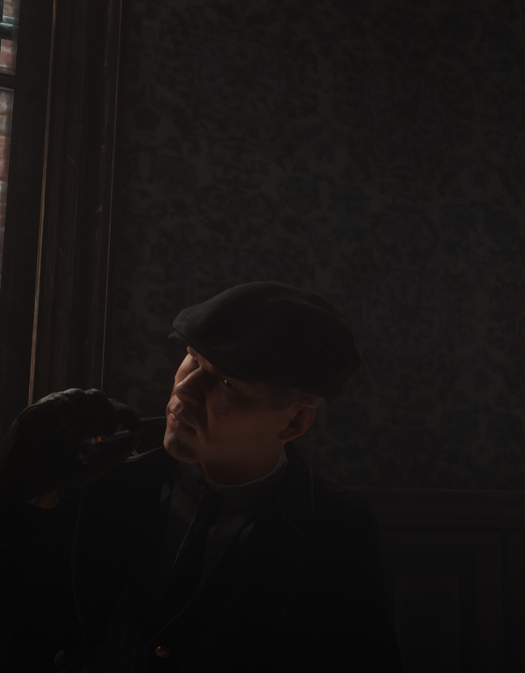
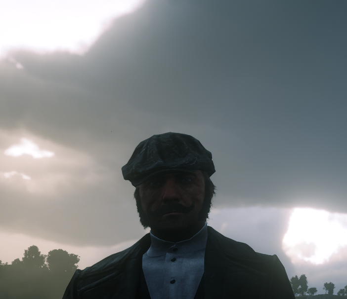
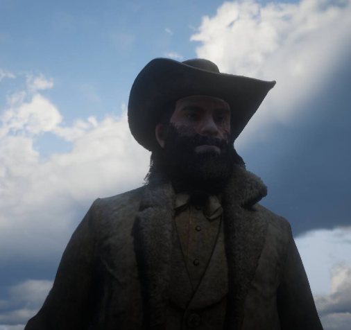
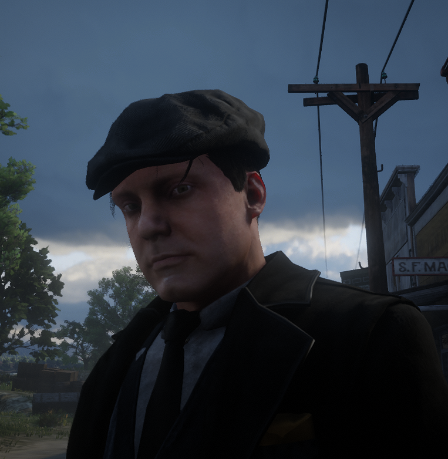
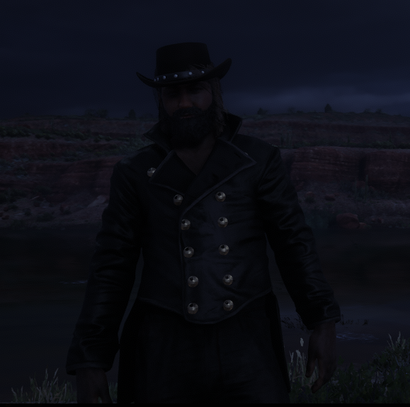

« À Saint-Denis, la loi s'arrête là où notre territoire commence. »
Dans la brume et la suie des quartiers industriels de Londres, les frères Kingston s'étaient taillé un véritable empire criminel. Mais la violence de cet univers a fini par leur coûter cher : la mort tragique de Johnny Kingston a brisé l'équilibre de la fratrie. Refusant de couler avec leurs souvenirs, Arthur Kingston et son jeune frère Elias ont choisi de traverser l'Atlantique pour exporter leur syndicat et bâtir un nouveau royaume en Amérique.
Elias Kingston est né dans les quartiers pauvres de Londres, au sein d’une famille où la criminalité faisait partie du quotidien. Après l’assassinat de son frère Johnny lors d’une guerre de gangs, Elias participa à la vengeance des Kingston, forçant finalement la famille à fuir l’Angleterre pour échapper aux autorités.
Installé à Saint-Denis, Elias découvre rapidement le potentiel des docks, du commerce clandestin et de la corruption. Grâce à son calme et son sens de la négociation, il se forge un réseau auprès des commerçants, contrebandiers et hommes influents de la ville.
Aujourd’hui, Elias est l’un des hommes clés des Kingston : il développe leurs affaires, négocie leurs alliances et règle discrètement les problèmes que les hommes de main ne peuvent pas résoudre.
Arrivés dans un Nouveau Monde sauvage et sans pitié, les Kingston avaient le capital et la vision, mais il leur manquait une force de frappe locale capable de s'imposer sur le terrain. C'est au cœur de la misère poussiéreuse du Texas qu'il croise la route d'un groupe de survivants locaux.
Ayant grandi dans la rue en bravant la faim et la poudre, la fratrie Harper — menée par l'aîné John, épaulé par le téméraire Harry, le solide William et le jeune Jack — forme un bloc inébranlable avec leur ami d'enfance et frère d'armes, John Smith.
Comprenant immédiatement l'opportunité mutuelle, la jonction s'opère :
En combinant l'organisation méthodique des Britanniques et la férocité tactique de la cellule d'élite texane, l'organisation d'Arthur Kingston est désormais parée pour régner. Sous le commandement direct de John Harper sur le terrain et la finesse diplomatique d'Elias en coulisses, cette alliance d'acier et de poussière est prête à tout pour écraser la concurrence et ne plus jamais se laisser dicter sa loi.
Désormais installée aux docks de Saint-Denis, la Famille Kingston incarne l'élégance britannique alliée à la rigueur des affaires. Sous leurs costumes trois pièces et leurs manières distinguées, ils mènent leurs activités civiles et commerciales avec une discipline de fer, guidés par la volonté d'imposer leur influence sur toute la région.
Soutien Républicain : La famille soutient ouvertement le Parti républicain, prônant le développement industriel et le protectionnisme économique, tout en finançant discrètement ses figures politiques clés.
Un mélange de discipline militaire, de pragmatisme économique et de respect strict du code d'honneur britannique.

Dirige le clan, gère la diplomatie, la vision stratégique et les relations extérieures.

Suit son grand frère et participe aux décisions stratégiques de la famille.

Responsable de la sécurité des membres, de la discipline interne et du terrain.

Gère la trésorerie, la comptabilité des affaires et le blanchiment des capitaux.

Supervise les convois, le matériel et renforce la protection des intérêts de la famille.